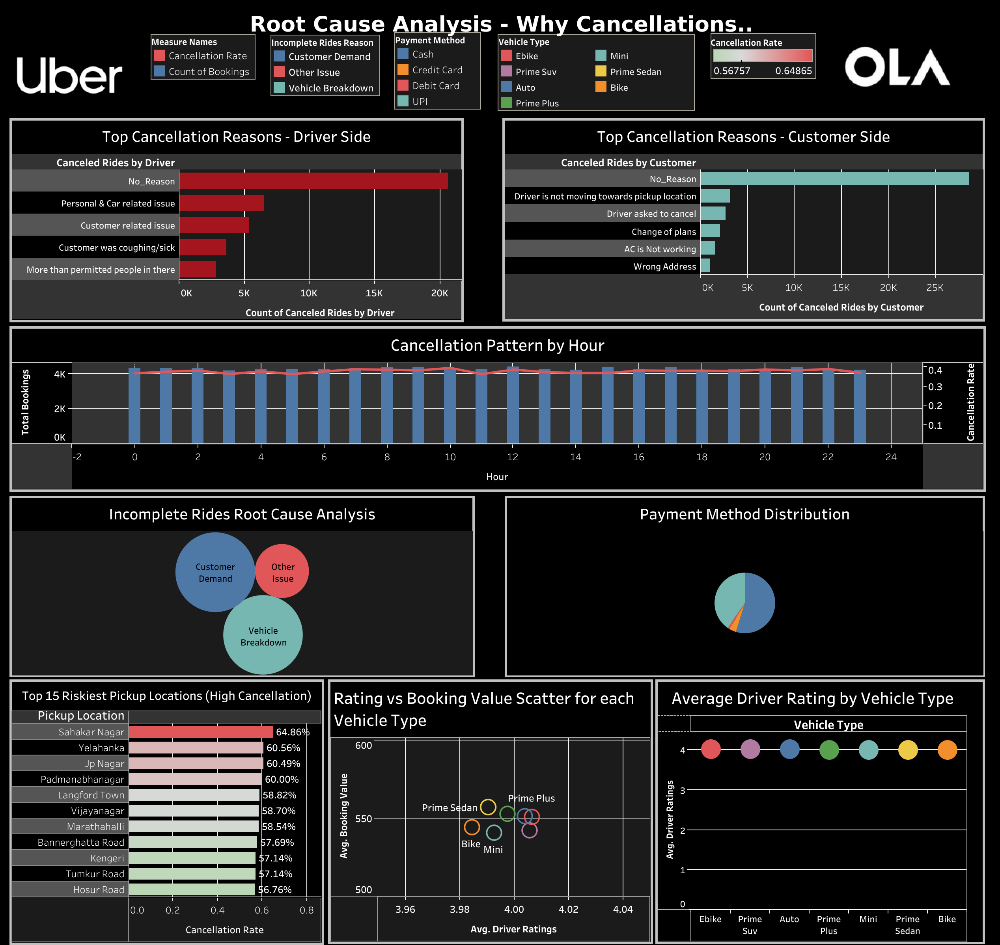

Featured Projects

Steam Games Analytics
KPI-driven analysis of pricing, engagement, and player satisfaction.
- 90K dataset analysis
- Market concentration insights
- Pricing vs engagement trends

Uber & Ola Analytics
Ride cancellation analysis and operational optimization insights.
- 100K+ ride data
- Cancellation root causes
- Peak-hour inefficiencies